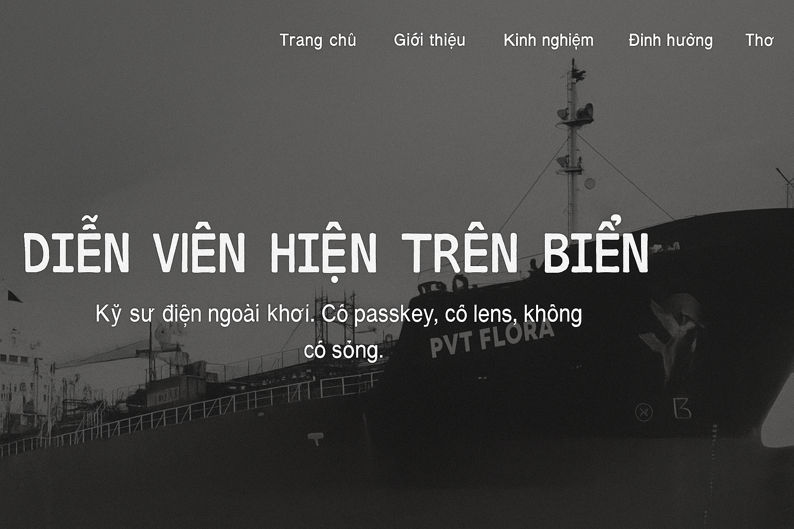

Kỹ sư điện ngoài khơi.
Không có sóng, tôi vẫn sync được cảm xúc
Cầm passkey mở bảo mật, cầm máy ảnh mở lòng người
Ảnh không nét thì tôi lấy nét. Sóng không mạnh tôi reset router
Dưới ánh trăng và tín hiệu VSAT, tôi chỉnh tay khẩu độ lẫn subnet

Diễn viên hiện trên biển là ai?
Một kỹ sư điện ngoài khơi, người vừa bắt tín hiệu VSAT vừa bắt khoảnh khắc ánh sáng.
Đôi khi không có sóng, nhưng vẫn đồng bộ được cảm xúc – bằng passkey, ống kính, và sự yên lặng của đại dương.